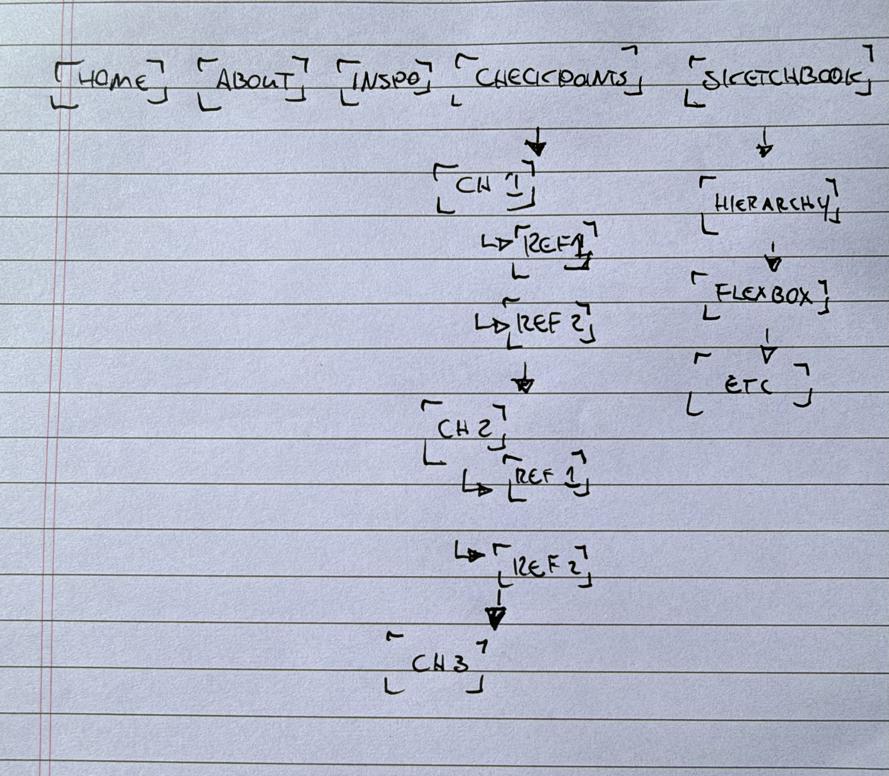
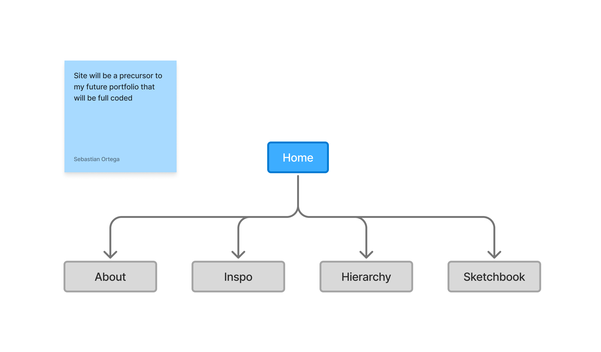

During our peer review session I received some feedback that some of my links weren't fully working. I have since fixed those, but as I was fixing them, I got an idea to refine my nav. I also decided it would be a good idea to rethink the site architecture a little bit. Instead of displaying all assignments on my nave, I will have sub navs for all sketchbook pages. I want to do something similar for checkpoints.

This new way of organizing my content keeps my information slightly more organized and will allow me to review links a bit more effectively. This is my hope. This will also help my nav and general content feel more digestible for any visitors checking out my site. I also worked on updating the the styling of the h2's for the checkpoint page. My idea here was to add an indicator that the user is now viewing a new section or checkpoint.
When I first worked on the site, I made it look and feel extremely basic. I mostly focused on getting the assignments done quickly. There wasn't much to really think about for me at this state. I also quickly made a sitmap to give me an idea of where info will be placed on my site.

This exercise was relatively easy for me. I was able to figure out how to create a hover stage and style nave globally. What was most challenging for me was trying to figure out the padding and margins just right. I wasn't sure if I was adding too much separate padding on the hover, nav-link, and nav css styling. One final thing is I really don't like having child stylesheets. I think they are a recipe for creating inconsistency, but I'm sure in time I will find use for them.
During this week we worked on redesigning out point of entry page. I mostly aimed to keep the homepage basic for now. But I do want to add cute old internet things, like a pixelated butterfly moving around the page. I'm still trying to decide if I should have a darker background color or a lighter color. Part of me wants to switch to something more playful.
For this assignment, we worked on making sure the page was somewhat responsive. We also mainly focused on flexbox. This week was fairly simple. At times I would get confused on flex direction for the inspo page, but I figured it out in the end. Something I still want to work on is the navigation. I'm thinking about possibly having a main assignments page and maybe dropdown nav links. I want to create something a little smoother. One thing I worked on quite a bit was making sure the nav bar and general colors felt cohesive. I feel happy about the work, but would like to work more on my general design system.